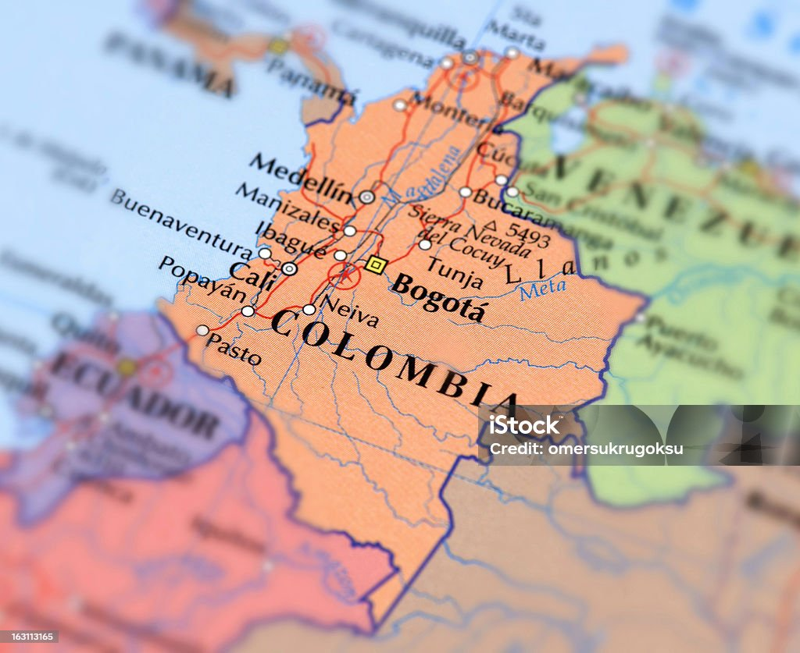

Paso 1: Introducción

La problemática intercultural dentro del contexto educativo colombiano refleja tensiones persistentes entre la diversidad cultural y las prácticas pedagógicas que no siempre reconocen ni valoran dicha pluralidad. Con base en el recurso UNAD (2023), esta sección contextualiza la necesidad de analizar críticamente el impacto de acciones pedagógicas que promueven inclusión, pensamiento crítico y comprensión intercultural.
Evaluar estas acciones permite determinar si realmente responden a los desafíos socioculturales actuales y fortalecen la formación integral desde una perspectiva intercultural.
Paso 2: Descripción y análisis del contexto

El contexto sociocultural analizado se caracteriza por la coexistencia de múltiples identidades, saberes y tradiciones. En muchos entornos educativos, estas diversidades chocan con prácticas homogéneas que no responden a las necesidades de comunidades indígenas, afrodescendientes y rurales.
Según UNAD (2023), el desarrollo del pensamiento crítico es clave para enfrentar estas tensiones, permitiendo que estudiantes y docentes reflexionen sobre prejuicios, desigualdades y la necesidad de interacciones interculturales auténticas.
Paso 3: Evaluación del impacto social y educativo

Las acciones pedagógicas diseñadas pueden generar impactos significativos, como el fortalecimiento del diálogo intercultural, la disminución de estereotipos y el aumento de la participación de comunidades diversas dentro del aula.
Educativamente, estas acciones promueven ambientes más inclusivos, mejoran la comprensión de problemáticas sociales y fomentan el pensamiento crítico, tal como lo enfatiza el OVA de Lectura crítica (UNAD, 2023).
Paso 4: Aporte a los Objetivos de Desarrollo del Milenio (ODM)

Las propuestas pedagógicas desarrolladas contribuyen a Objetivos de Desarrollo del Milenio como:
- Reducción de desigualdades.
- Garantía de una educación inclusiva y de calidad.
- Promoción de la igualdad y el respeto intercultural.
Estas acciones fomentan la transformación social mediante la integración de la diversidad y la generación de pensamiento crítico para un desarrollo sostenible.
Paso 5: Conclusiones

El análisis realizado demuestra que las acciones pedagógicas interculturales fortalecen el desarrollo crítico, promueven la inclusión y permiten afrontar las tensiones socioculturales presentes en la educación. Su relevancia a largo plazo radica en la capacidad de transformar las dinámicas escolares y fomentar una sociedad más justa y equitativa.
En coherencia con UNAD (2023), reflexionar sobre estos procesos favorece una educación consciente, inclusiva y con sentido social.